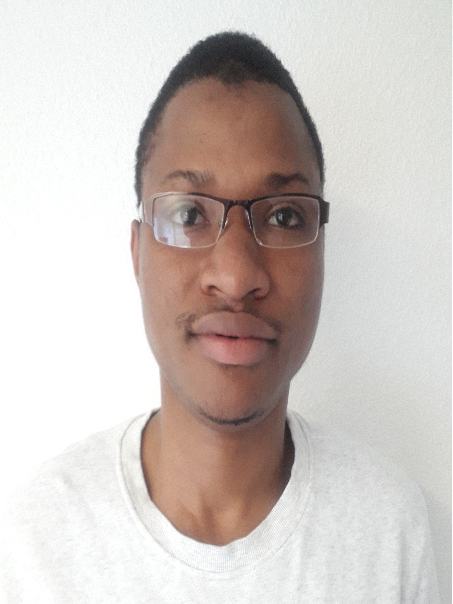

|

Diallo Thierno Ibrahima ETAT CIVIL
COORDONNEES
LANGUES
INFORMATIQUE
CENTRES D’INTÉRÊT
|
2018-2019
2016-2018
2015-2016
2012-2015
Master 1 Miage un cursus en cours à
l’université Grenoble Alpes, dans le cadre
du système LMD.
Licence 3 Miage un cursus effectué à
l’université Grenoble Alpes, dans le cadre
du système LMD.
Master 1 Miage un cursus effectué à
l’université de Kofi Annan de Guinée, dans
le cadre du système LMD.
Licence Miage un cursus effectué à
l’université de Kofi Annan de Guinée, dans
le cadre du système LMD.
2018
2017
2016
2014-2016
2015
2015
Mise en place à partir d'un existant d'une web API Restful pour un système collaboratif.
Encapsulation de procédure stockée.
Déploiement de la web API sur un serveur ftp via FileZilla.
Mise en place de documentation technique.
Environnement de développement : windows
Editeur : Visual studio 2016
Outil de versionning : GitLab
Outil de stockage de fichier online : AWS S3
Technologies utilisées: C#, Entity Framework (Database-First), SQL Server 2016, Swagger, Postman, filezilla
KODERS
Juin à Août, stage de 3 mois.
Participation à la conception d’application de
gestion des alertes de cyber-sécurité sur l’offre
logiciel d’eaton en Angularjs et OpenJPA
EATON INDUSTRIES FRANCE
Juin à Août, stage de 3 mois.
Conception d’application de gestion de
supermarché en VB.NET.
UNIVERS TECH GROUP.
Juin à Septembre, travail de 3 mois.
Soutien scolaire en maths, physique, chimie.
A domicile
Octobre 2014 à juin 2015, Octobre 2015 à juin 2016.
Enregistrement d’opération de transfert
d’argent et la maintenance des ordinateurs.
MONEY GUINEE BUSINESS SARL
Juin à Septembre, stage de 3 mois.
Enregistrement d’opération de transfert
d’argent et accueille de la clientèle..
MONEY GUINEE BUSINESS SARL
Juin à Septembre, stage de 3 mois.
2018
2018
2017
2016
Conception et développement d’application de gestion de
de Seminaire.
Front-End : Java Swing Back-End : Java, Oracle
Gestion de Projet : MS Project (Diagramme de Gantt)
Versioning :https://github.com/sorytech/Gestion_Seminaires
UNIVERSITE GRENOBLE ALPES
Conception et développement d’un système de gestion de
de base de données relationnelle.
Technologies utilisées : Java (JavaCC)
UNIVERSITE GRENOBLE ALPES
Conception jeux vidéo et d’une application web de gestion de
cabinet infirmier.
Front-End : Angular 2, Ajax, Jquery, Material Design.
Back-End : Java(Env3D), XML, XSLT, XML Shema, XPath
Versioning :https://github.com/sorytechr/>
UNIVERSITE GRENOBLE ALPES
Conception d’application de gestion stock.
Technologies utilisées : J2EE, MySQL.
UNIVERSITE KOFI ANNAN DE GUINEE